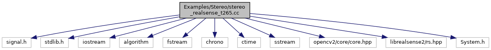

#include <signal.h>#include <stdlib.h>#include <iostream>#include <algorithm>#include <fstream>#include <chrono>#include <ctime>#include <sstream>#include <opencv2/core/core.hpp>#include <librealsense2/rs.hpp>#include <System.h>
Include dependency graph for stereo_realsense_t265.cc:

Go to the source code of this file.
Functions | |
| void | exit_loop_handler (int s) |
| int | main (int argc, char **argv) |
Variables | |
| bool | b_continue_session |
Function Documentation
◆ exit_loop_handler()
| void exit_loop_handler | ( | int | s | ) |
Definition at line 38 of file stereo_realsense_t265.cc.
References b_continue_session.
Referenced by main().
Here is the caller graph for this function:

◆ main()
Definition at line 44 of file stereo_realsense_t265.cc.
49 cerr << endl << "Usage: ./stereo_realsense_t265 path_to_vocabulary path_to_settings (trajectory_file_name)" << endl;
99 rs2_intrinsics intrinsics_left = fisheye_stream_left.as<rs2::video_stream_profile>().get_intrinsics();
104 rs2_intrinsics intrinsics_right = fisheye_stream_right.as<rs2::video_stream_profile>().get_intrinsics();
123 imLeft = cv::Mat(cv::Size(width_left, height_left), CV_8UC1, (void*)(frame_left.get_data()), cv::Mat::AUTO_STEP);
124 imRight = cv::Mat(cv::Size(width_right, height_right), CV_8UC1, (void*)(frame_right.get_data()), cv::Mat::AUTO_STEP);
145 t_resize = std::chrono::duration_cast<std::chrono::duration<double,std::milli> >(t_End_Resize - t_Start_Resize).count();
References b_continue_session, exit_loop_handler(), ORB_SLAM3::System::GetImageScale(), ORB_SLAM3::System::Shutdown(), ORB_SLAM3::System::STEREO, and ORB_SLAM3::System::TrackStereo().
Here is the call graph for this function:

Variable Documentation
◆ b_continue_session
| bool b_continue_session |
Definition at line 36 of file stereo_realsense_t265.cc.
Referenced by exit_loop_handler(), and main().